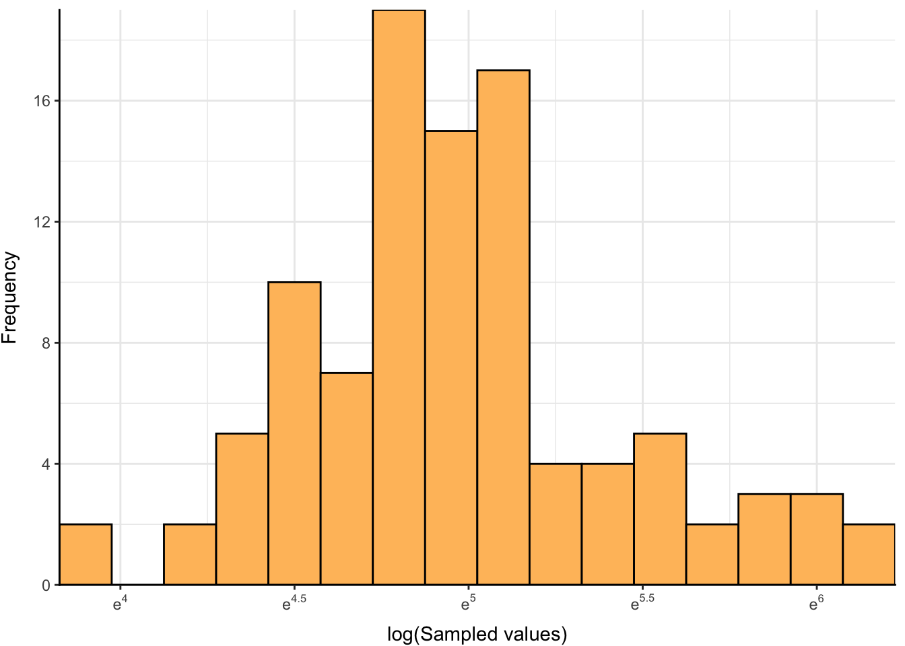
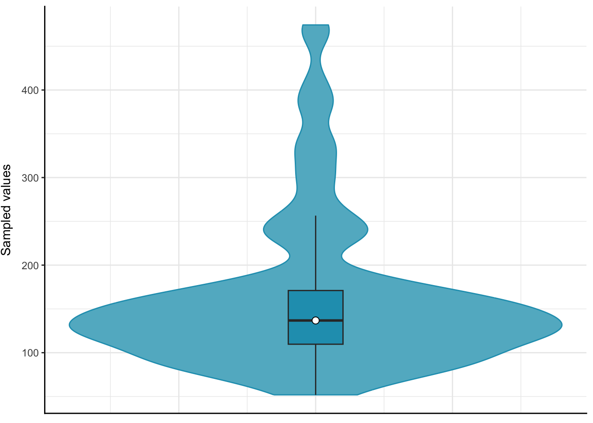
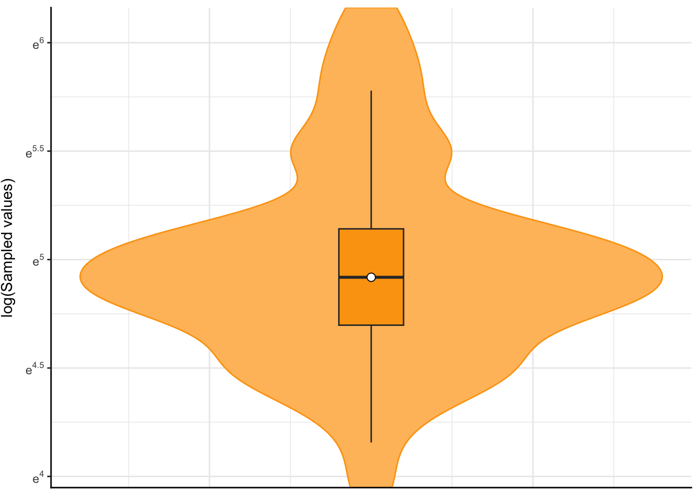

Code
vals <- data.frame(x = rlnorm(n = 100, meanlog = 5, sdlog = 0.5))In this exercise, 100 values are sampled from a log-normal distribution and the data is plotted as a histogram and as a violin plot, both on linear and log scales.
vals stores \(n = 100\) values sampled from a log-normal distribution with parameters \(\mu = 5\) and \(\sigma = 0.5\).
vals <- data.frame(x = rlnorm(n = 100, meanlog = 5, sdlog = 0.5))The theoretical mean and standard deviation of the log-normal distribution are given by:
\(\mu^{*} = e^{\left(\mu + \frac{{\sigma}^2}{2}\right)} \approx 168\)
\(\sigma^{*} = \sqrt{e^{2\mu + {\sigma}^2} (e^{{\sigma}^2} - 1)} \approx 90\)
Here, the observed mean and standard deviation of the sampled values are:
\(\mu^{*}_{obs} =\) 160.82
\(\sigma^{*}_{obs} =\) 86.08
The observed statistics are indeed quite close to their theoretical values!
The 100 sampled values stored in vals are plotted as a histogram on (a) a linear scale, and (b) a log scale.
ggplot(vals, aes(x)) +
geom_histogram(binwidth = 30, fill = "#62b6cb", color = "black") +
scale_x_continuous(expand = c(0, 0), breaks = seq(0, 1000, by = 100)) +
scale_y_continuous(expand = c(0, 0), breaks = seq(0, 100, by = 4)) +
labs(x = "Sampled values", y = "Frequency") +
theme_bw() +
theme(
axis.title.y = element_text(vjust = +3),
axis.title.x = element_text(vjust = -1),
panel.border = element_blank(),
axis.line = element_line(color = "black", linewidth = 0.5, lineend = "square")
)
ggplot(vals, aes(x)) +
geom_histogram(binwidth = 0.15, fill = "#ffbf69", color = "black") +
scale_x_continuous(
expand = c(0, 0),
trans = log_trans(),
breaks = trans_breaks("log", function(x) exp(x)),
labels = trans_format("log", math_format(e^.x))
) +
scale_y_continuous(expand = c(0, 0), breaks = seq(0, 100, by = 4)) +
labs(x = "log(Sampled values)", y = "Frequency") +
theme_bw() +
theme(
axis.title.y = element_text(vjust = +3),
axis.title.x = element_text(vjust = -1),
panel.border = element_blank(),
axis.line = element_line(color = "black", linewidth = 0.5, lineend = "square")
)

The samples from the log-normal distribution are right-skewed when plotted on a linear scale (Figure 1 (a)). Upon performing a log transform, they follow a normal distribution which is now reflected in the symmetry of the histogram about the mean of the samples (Figure 1 (b)).
The 100 sampled values stored in vals are now plotted as a violin plot, again on (a) a linear scale, and (b) a log scale, with an overlaid box plot showing the median and the first and third quartiles.
ggplot(vals, aes(x = rep(1, 100), y = x)) +
geom_violin(fill = "#62b6cb", color = "#219ebc") +
geom_boxplot(width = .1, fill = "#219ebc", outlier.colour = NA) +
stat_summary(fun = median, geom = "point", fill = "white", shape = 21, size = 2.5) +
labs(x = NULL, y = "Sampled values") +
theme_bw() +
theme(
axis.text.x = element_blank(), axis.ticks.x = element_blank(),
axis.title.y = element_text(vjust = +3),
panel.border = element_blank(),
axis.line = element_line(color = "black", linewidth = 0.5, lineend = "square")
)
ggplot(vals, aes(x = rep(1, 100), y = x)) +
geom_violin(fill = "#ffbf69", color = "#fca311") +
geom_boxplot(width = .1, fill = "#fca311", outlier.colour = NA) +
stat_summary(fun = median, geom = "point", fill = "white", shape = 21, size = 2.5) +
scale_y_continuous(
expand = c(0, 0),
trans = log_trans(),
breaks = trans_breaks("log", function(x) exp(x)),
labels = trans_format("log", math_format(e^.x))
) +
labs(x = NULL, y = "log(Sampled values)") +
theme_bw() +
theme(
axis.text.x = element_blank(), axis.ticks.x = element_blank(),
axis.title.y = element_text(vjust = +3),
panel.border = element_blank(),
axis.line = element_line(color = "black", linewidth = 0.5, lineend = "square")
)

As expected from the histogram in Figure 1 (a), the “violin” in Figure 2 (a) is bottom-heavy, which similarly becomes symmetric about the mean upon performing a log transform (Figure 2 (b)).